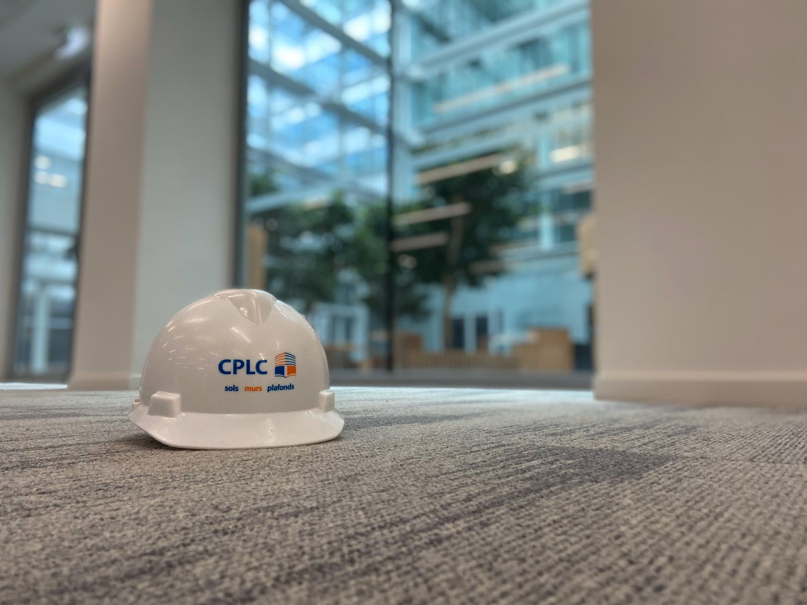

Sols
Caoutchouc, linoléum, PVC, sols coulés — confort, acoustique, hygiène.
Revêtements techniques adaptés aux contraintes les plus exigeantes : trafic intense, normes sanitaires, isolation phonique. Pose collée, soudée à chaud ou coulée en continu.

Depuis 1939 · Neuilly-sur-Seine
Revêtements techniques pour espaces professionnels, hospitaliers et culturels — du conseil à la pose, un engagement sans couture.
Caoutchouc, linoléum, PVC, sols coulés — confort, acoustique, hygiène.
Revêtements techniques adaptés aux contraintes les plus exigeantes : trafic intense, normes sanitaires, isolation phonique. Pose collée, soudée à chaud ou coulée en continu.
Habillage acoustique, peinture technique, lambris.
Correction acoustique par panneaux perforés, peintures lessivables haute résistance, lambris bois ou stratifié pour une isolation thermique et phonique maîtrisée.
Plafonds tendus, plafonds acoustiques, plafonds démontables.
Solutions suspendues pour une intégration technique irréprochable : plafonds tendus PVC, dalles minérales acoustiques, systèmes démontables facilitant l'accès aux réseaux.
Atelier familial spécialisé dans le caoutchouc et le linoléum. Neuilly-sur-Seine voit naître un artisanat d'exception, porté par la main sûre d'une famille de poseurs.
Premiers grands chantiers hospitaliers et scolaires. L'entreprise étend son périmètre à l'Île-de-France et noue des partenariats durables avec les maîtres d'ouvrage publics.
Innovation acoustique. CPLC intègre les plafonds techniques et les panneaux muraux absorbants à son offre, répondant aux nouvelles exigences des open-spaces et des établissements de santé.
Lancement Hévéacréation. Sol coulé en caoutchouc recyclé, développé pour les architectes en quête de matériaux bas carbone et de continuité visuelle sans joint.
100 chantiers par an, une promesse tenue au micron. Référence en Île-de-France pour les revêtements techniques, CPLC poursuit son développement avec le même souci du détail qu'en 1939.